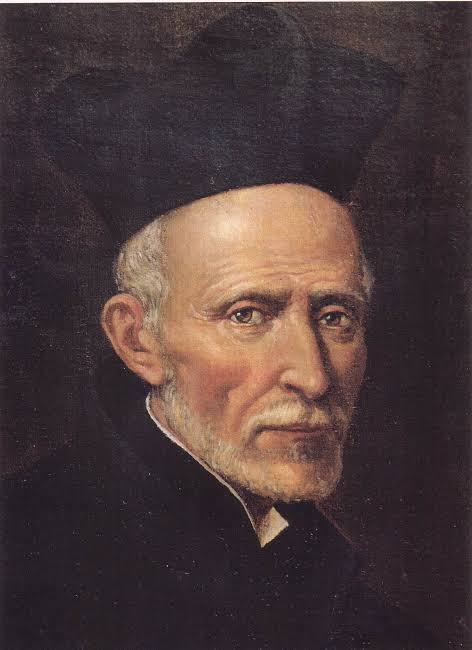

Biografía
San José de Calasanz (1557-1648) fue un sacerdote español, pedagogo y santo, fundador de las Escuelas Pías, la primera escuela popular gratuita de Europa, y de la orden religiosa de los Escolapios. Su vida se dedicó a la educación de los niños más necesitados, promoviendo una educación integral basada en la "Piedad y Letras".
Frases Célebres
"La buena educación de los jóvenes es, en verdad, el ministerio más digno, el más noble, el de mayor mérito, el más beneficioso, el más útil, el más necesario, el más natural, el más razonable, el más grato, el más atractivo y el más glorioso"
"Procure atraerse a los alumnos, mostrándose más padre suyo que juez riguroso".